Имагология · травелог · пограничная идентичность
П. В. Алексеев
Горно-Алтайский государственный университет;
Самаркандский государственный университет им. Шарофа Рашидова
Исследование выполнено за счёт гранта РНФ № 25-28-20397 «Межнациональные отношения в Сибири в рецепции европейских путешественников конца XIX – начала XX вв.»
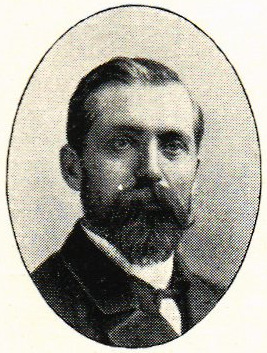
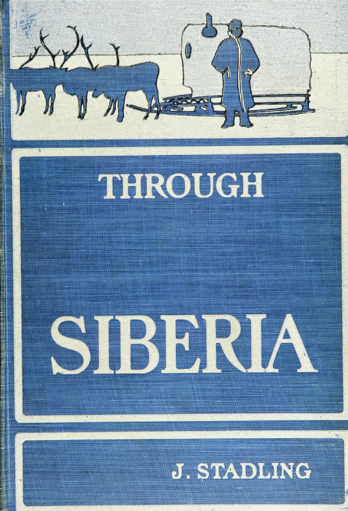
Рамка, а не предмет
Туземец «быстро приближается к своей неизбежной участи»; недоделанное казённой порчей довершают «торговец и водка».Ф. Х. Х. Гийемар, предисловие. Through Siberia, p. vii–x.
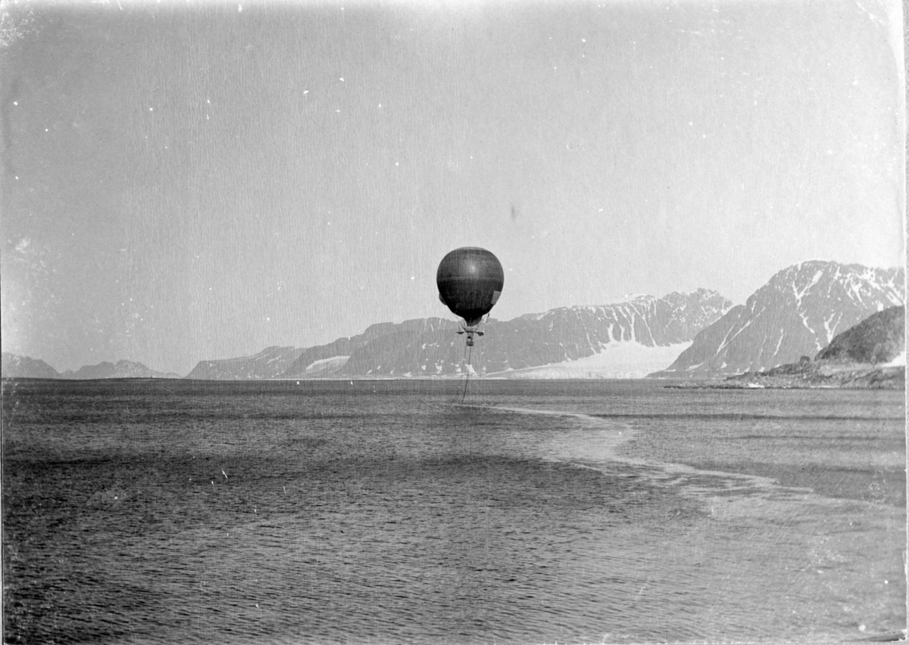
Историография
Открытый вопрос. Как в тексте складываются образы туземца, купца, миссии и «сибиряка»?
«Наиболее оригинальные страницы» — о тунгусах, бурятах и якутах: «бурятизация» русских чинов и «блестящее исследование влияния среды».Scottish Geographical Magazine. 1901. Vol. 17, No. 9. P. 502–503.
Единственный упрёк рецензента — «излишний пессимизм» относительно железной дороги.
Теоретическая рамка
В Shamanismen i norra Asien (1912) — систематика infödingar; в травелоге 1901 г. классификация ещё рождается из сцен.
Труды · выборка
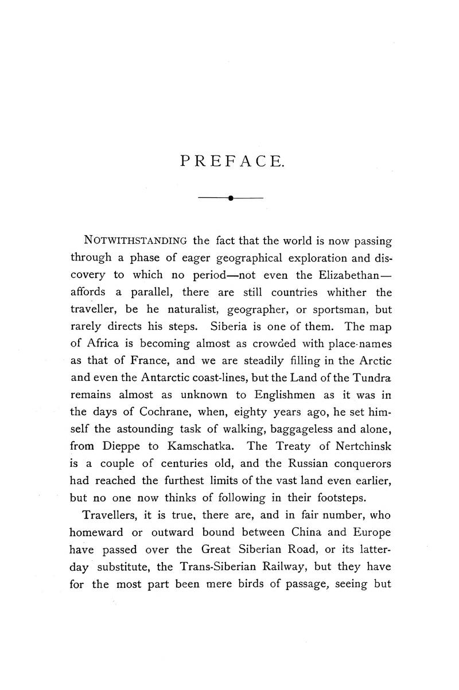
Маршрут 1898 г.
Количественная проверка · интерактив
Плотность на 10 000 знаков OCR; пики идут по маршруту статьи. Частотность ≠ сюжетный вес: Kirgises редки (12), но открывают ряд «туземных» образов.
Количественная проверка · интерактив
Только этносы — кто с кем на одних страницах. Этносы + темы — те же узлы плюс мотивы книги (купец, водка, шаман, ссылка, миссия, олень…): видно, в каком лексическом окружении появляется народ. Наведите на узел — подпись; клик — соседи.
1 · Транссиб · степь
«Сыны степи» с любопытством смотрят на «оборванные и голодные толпы русских, стекающиеся занять их пастбища»: «Да будет воля Аллаха!»Through Siberia, p. 21.
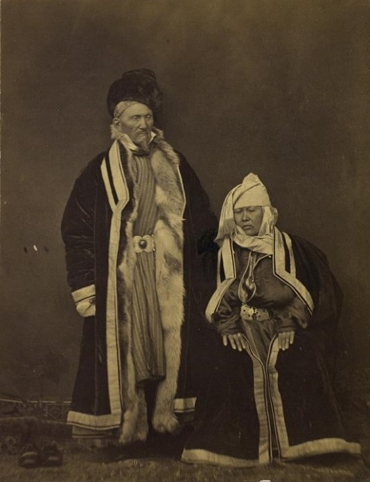
2 · Тайга · Сибирский тракт
«Вы, русские…» — «Мы не русские, мы сибиряки!»Through Siberia, p. 45–46.
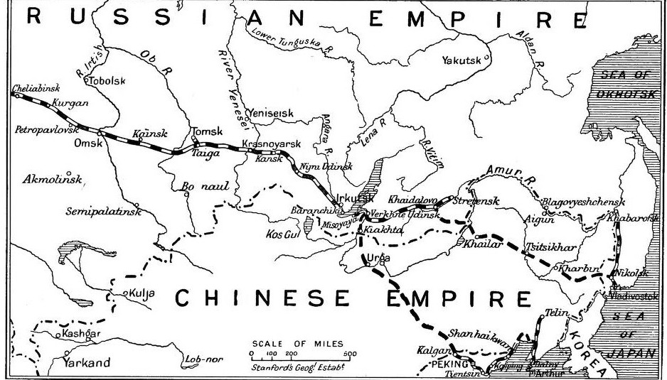
3 · Обратная аккультурация
Забыв родной язык, говорят «только по-бурятски и по-якутски или на каком-то смешанном наречии»; многие «сильнее верят в силы шамана, чем в обряды русского священника».Through Siberia, p. 55.
4 · Over the Buriatic Steppe
При добыче «соседи прежде получают свою долю мяса, а хозяину остаётся лишь то, что осталось».Through Siberia, p. 53.
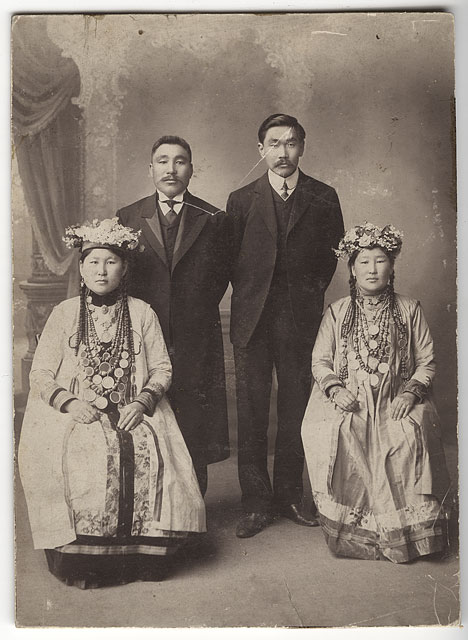
5 · Якутская область
Семьи «глубоко в долгу у немногих богачей, по большей части из своего же народа, которые держат их в состоянии рабства».Through Siberia, p. 90.
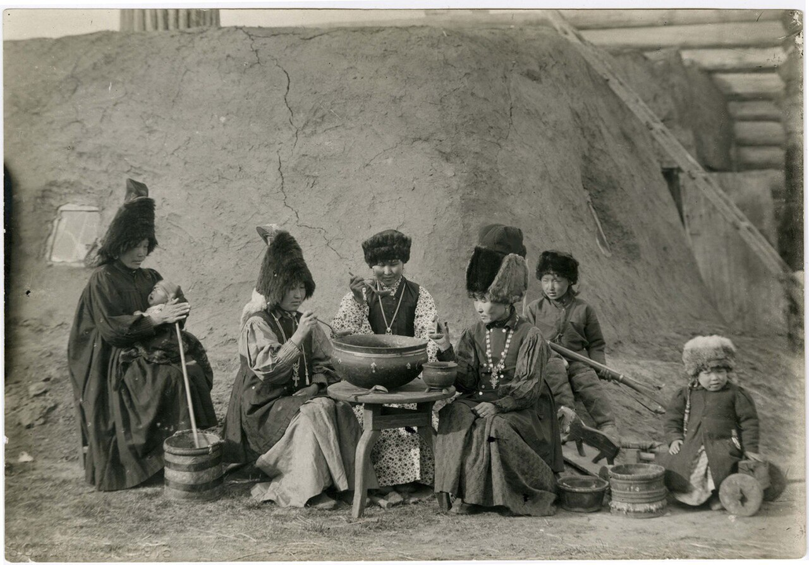
6 · Лена · Оленёк · Таймыр
Вдова держала сыновей и стада «как можно дальше от всякого соприкосновения с „крещёными людьми“ (купцами и священниками)»: сыновья «не знают вкуса ни табака, ни водки».Through Siberia, p. 239.
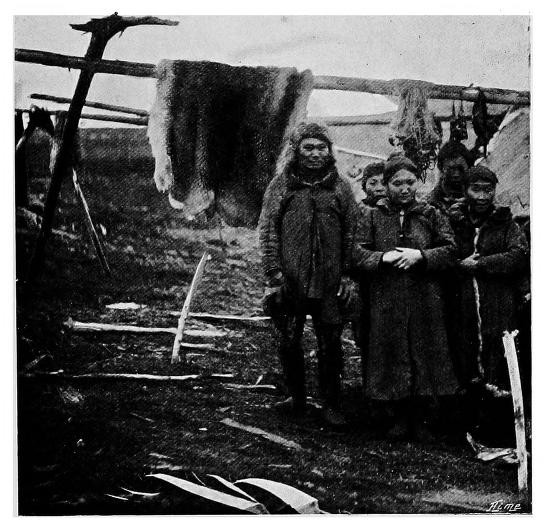
7 · Институты обмена · нижняя Лена
«Я даже не выучился подписывать своё имя, — но погляди-ка, не благословил ли добрый Бог моих предприятий!»Through Siberia, p. 142–143.
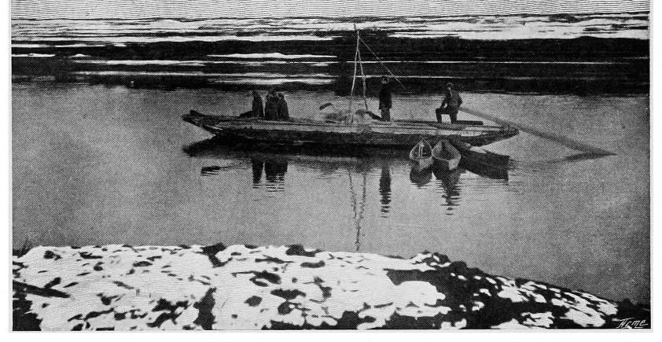
7 · Анабар · долганское стойбище
«Что делали эти молодые люди там, на небе, куда они полетели на своём шаре? Хотели навестить великого Тангару?»Through Siberia, p. 215.
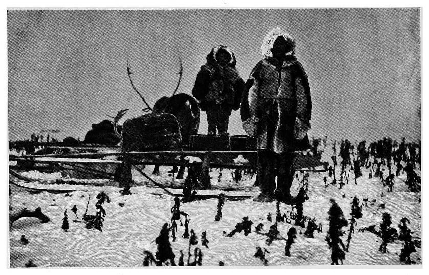
8 · Among the Shamans
«Я раз в год исповедуюсь священнику и даю ему шкуру голубого песца, и тогда он доволен, и я могу спокойно шаманить ещё год».Through Siberia, p. 227.
«Крещёные люди — самые худшие негодяи (worst rascals) на всём Таймыре».Некрещёный самоед. Through Siberia, p. 234.
9 · Туруханск
«Ну, я отвешиваю ему три четверти фунта чаю и говорю: „Вот тебе фунт“; а он… идёт к моему соседу и перевешивает! В прежние годы я давала ему полфунта… — и он верил… До чего хитрый зверь он стал!»Мадам Копылиха. Through Siberia, p. 254–255.
Официальная «порча» туземца оборачивается жалобой эксплуататора на утрату удобной доверчивости.
Заключение
«Сибирь — не Северная Америка»: новые пути здесь — не начало новой цивилизации, а «подспорье уже существующей, наполовину истощённой и бесплодной культурной системе».Стадлинг вслед за Н. М. Ядринцевым. Through Siberia, p. 298.
Изображения: Internet Archive (Through Siberia, 1901); Wikimedia Commons; Library of Congress. Грант РНФ № 25-28-20397.